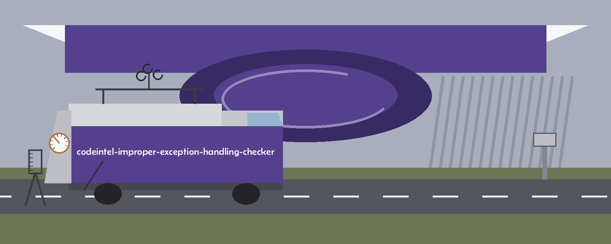

The Safety Net. An improper exception handling checker that reports on a Python file or directory through exactly one external analyzer per run, the one its flag chooses.
One spring taken in both hands and tested before the net is trusted with a fall.
One tool per run--tool chooses among bandit, flake8, pylint, and pyre-check, defaulting to bandit; a full picture takes four runs lined up by hand
The subject lives in the flagsFlake8 runs with bare except E722 deliberately left selected; pylint disables only the line length check, so its bare and broad except warnings stay live
Findings keptA tool’s non zero exit keeps the findings on its stdout rather than discarding them
Empty is cleanOnly a result of None counts as failure and exits 1; an empty string is a clean run, prints an empty report, and exits 0
The README usage line is a placeholder naming neither path nor tool flag; the real invocation is the one above. Bandit runs its stock recursive text check, and pyre is invoked as pyre analyze on the path, the branch likeliest to fail on a project never set up for it. The --exclude list is comma separated and spelled per tool.
Option
What it does
path
The file or directory to examine. Required. The README parameter list omits it; the code requires it.
--tool
The one analyzer for this run: bandit, flake8, pylint, or pyre-check. Default bandit. The README list gives this No description provided; the help text in main.py describes it and gives the default.
--exclude
A comma separated list of files or directories to leave out, spelled per tool.
--report_file
Save the report to a file in place of stdout.

The net walked and tested before anything is allowed to fall.
Judged before it is needed
The exception handling subject lives in the invocations rather than in any check of the tool’s own: the tool reports what its one chosen analyzer reports.
Because only one analyzer runs per run, a single quiet report means one instrument found nothing; the other three have not been asked.
A clean run and a silent tool come to look alike: an empty string prints as an empty report and exits 0, and only a result of None is treated as failure.
Requirements
Python, plus the four external analyzers listed in the requirements file (bandit, flake8, pylint, and pyre-check, each 1.0.0 or later), each invoked when selected with --tool.